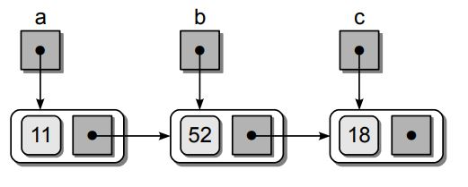
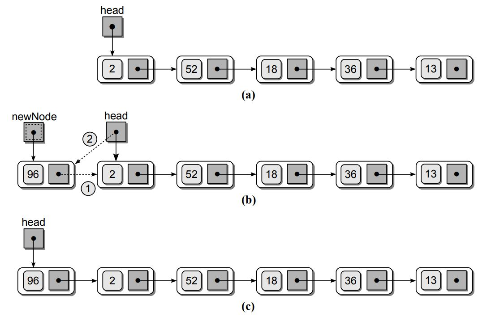

Linked List
Introduction
Linked list is another powerful data structure that can be used to store a collection in a linear order. It allows for smaller memory allocation without requiring the element shifts for insertion and deletion operations. It still requires linear time complixity to search an item just like arrays. There are multiple types of linked-lists: * Singly linked-list * Doubly linked-list * circular singly and doubly linked-list
we will first explain the concept of linked-list using a singly linked-list structure which is the easiest to understand. Suppose we have a basic calss containing a single value a next point to None:
class ListNode :
def __init__( self, data ) :
self.data = data
sef.next = None
This is a single node and we can create several instances of this node and each containing an integer value.
a = ListNode( 11 )
b = ListNode( 52 )
c = ListNode( 18 )
This is how the nodes will look like.

Finally, we can point each node to each other where a points to b and b points to c.
a.next = b
b.next = c
 once all nodes are connected, we do not need to have b and c references. All we need is the value at the begining of the list which in this case is a. We can find the values in the other nodes as:
print( a.data )
print( a.next.data )
print( a.next.next.data )
The first node in the linked-list, must be named
or referenced by an external variable as it provides an entry point into the linked
list. This variable is commonly known as the head pointer, or head reference. A
linked list can also be empty, which is indicated when the head reference is null.

Since Array is a data structure, we should be comfortable to know how perform these operations in the linkedList: - Printing the list - Insert - Search - get - Delete - Update
1. Printing the list
The process starts by assigning a temporary external reference temp to point to the head of the linked-list. Then we start a while loop and the value stored in the first node is printed by accessing the data component stored in the node using the external reference. The external reference is then advanced to the next node by assigning it the value of the temp link field. The loop iteration continues until every node in the list has been accessed or temp is None.
def print_list(self):
# start from the head of linked-list
temp=self.head
# loop over each element until the temp.next is None
while temp is not None:
# at each node, print the data
print(temp.data)
# got to the next node
temp=temp.next
2. - Insert
Inserting an element to an array takes many forms: - inserting at an arbitrary location in the linked-list. - appending the linked-list. - prepending the linked-list.
We create three methods for each of the insert operations listed above. Inserting an element at an index is a O(n) operation at the most. We do not have to shift the elements to the right as we had to for the array insert operation.
def insert_by_index(self, index, data):
# initiate the new node using the new data
new_node = ListNode(data)
# check if index is below zero
if index<0:
return False
# check if the new node is a prepend
if index==0:
new_node.next=self.head
self.head=new_node
return
# get the node before using the get() method
temp=self.get(index-1)
# check to see if it is a tail node
if temp.next==self.tail:
self.tail.next=new_node
self.tail=new_node
else:
# call the node where the current index exist as **after**
after=temp.next
# connect the temp node to new node
temp.next=new_node
# connect the new_node to after node
new_node.next=after
```
Appending and pre-pending a linked-list is simple as far as we track the **head** and **tail** nodes.
```python
def insert_tail(self,data):
# initiate the new node using the new data
new_node = ListNode(data)
# if there is not head, create the head node
if self.head is None:
self.head=new_node
self.tail=new_node
# if it is not the head node, point the tail to the new node and change tail
else:
self.tail.next=new_node
self.tail=new_node
def insert_head(self,data):
# initiate the new node using the new data
new_node = ListNode(data)
# if there is not head, create the head node
if self.head is None:
self.head=new_node
self.tail=new_node
# if it is not the head node, point the tail to the new node and change tail
else:
new_node.next=self.head
self.head=new_node
3. Search
A linear search operation can be performed on a linked-list just the same way as the arrays. It is very similar to the way we printed the values of linked-list earlier. The only difference is that the loop can terminate early if we find the target value within the list.

def search(self, data):
# start from the head of linked-list
temp=self.head
# loop until the end of linked-list
while temp is not None:
# if the node values is equal to data, return True
if temp.data==data:
return True
# go to the next node
temp=temp.next
# if the values is not there, return False
return False
4. get
get operation will return the node with a certian index. For that we take a loop over the linked-list until we reach to the index node. We will have to check certian edge cases like if head nod is None or index provided is zero or larger than the length of the linked-list. The following code shows the get method.
def get(self, index):
# check if head is None or index is below zero
if self.head is None and index<0:
return False
# start from the head of linked-list
temp=self.head
# loop over each element until the index
for _ in range(index):
# check if the index is more than the length of linked_list
if temp is None:
return False
temp=temp.next
# return the node value
return temp
5. Delete
Deleting a node by its index requires us to find the node just before the node that we want to delete. For that we can use the get() operation we defined before. Once we find that, we can just connect it to the the node after the one that we want to delete. Be mindful of certian edge cases while doing that.
def delete(self, index):
# check if head is None or index is below zero
if self.head is None and index<0:
return False
# check if it is the head node
if index==0:
self.head=self.head.next
# get the node before using the get() method
temp=self.get(index-1)
# check to see if it is a tail node
if temp.next==self.tail:
temp.next=None
self.tail=temp
else:
temp.next=temp.next.next
6. Update
Updating a node in a linked-list requires us to find the element first. We can do that using the get() method we defined earlier. Then we just replace its data with the new data.
def update(self, index, data):
# get the element using its index and get() method
temp=self.get(index)
# change its data
temp.data=data
Examples problems with linked-list
We can use the one pointer and two pointer methods that we used for the array to solve problems related to linked-list as well. Just be mindful the linked-list flow.
1. Design a linked-list data structure
Design a linked-list data structure that contains all essential methods. Please take a look at this code for the solution. This solution is long, so I will not include it in the readme here.
Solution Code
3.Reverse a linked-list
Problem Description: Given the head of a singly linked list, reverse the list, and return the reversed list.
Solution Code
With reversed linked-list we want the direction of next to reverse backward. We will use three pointers to solve the problem in linear fashion: left node, right node and the node itself. We change the direction from right to left as the following code. The solution is part of the linked-list class defined earlier, so the values of head and tail is given to us from that.
def reverse(self):
# let the left node be None and initiate temp and right at head
left=None
temp=self.head
right=self.head
# loop over the linked-list as long as right is not None
while right:
# move the right one step
right = right.next
# point the node to the left
temp.next=left
# move left to the current node
left=temp
# move the current node to the right
temp=right
# finaly, change the head and tail
self.head=self.tail
self.tail=self.head
3. Linked List Cycle
Problem Description: Given head, the head of a linked list, determine if the linked list has a cycle in it. There is a cycle in a linked list if there is some node in the list that can be reached again by continuously following the next pointer. Internally, pos is used to denote the index of the node that tail's next pointer is connected to. Note that pos is not passed as a parameter. Return true if there is a cycle in the linked list. Otherwise, return false.
Test case 1
Input: head = [3,2,0,-4], pos = 1
Output: true
Explanation: There is a cycle in the linked list, where the tail connects to the 1st node (0-indexed).
Test case 2
Input: head = [1,2], pos = 0
Output: true
Explanation: There is a cycle in the linked list, where the tail connects to the 0th node.
Test case 3
Input: head = [1], pos = -1
Output: false
Explanation: There is no cycle in the linked list.
Solution Code
We can use this question using two methods: 1. Using hash set. We perform a linear search over each element and add each node to the hash set. If the element was in the set, it means we circled back to the element and therefore, it is a circular linked-list. 2. The second method is using two pointers. One is fast and jumps two steps at a time. The other one is slow and steps one at a time. These two would eventually meet, and if they do, the linked-list is circular.
In the following, we create two functions using both methods.
# Definition for singly-linked list.
class ListNode:
def __init__(self, x):
self.val = x
self.next = None
class Solution:
def hasCycle(self, head) -> bool:
q=set()
temp=head
while temp is not None:
if temp in q:
return True, temp.val
q.add(temp)
temp=temp.next
return False
def hasCycle2(self, head) -> bool:
slow=head
fast=head
while slow and fast and fast.next:
slow=slow.next
fast=fast.next.next
if slow==fast:
return True, slow.val
return False
# test 1#
# Construct the list
a, b, c, d=ListNode(3), ListNode(2), ListNode(0), ListNode(-4)
a.next=b; b.next=c; c.next=d; d.next=b; head=a
result=Solution()
print(result.hasCycle(head))
# test 2#
# Construct the list
a, b=ListNode(1), ListNode(2)
a.next=b; b.next=a; head=a
result=Solution()
print(result.hasCycle(head))
# test 3#
# Construct the list
a=ListNode(1)
head=a
result=Solution()
print(result.hasCycle(head))
3.
Solution Code
4.
Solution Code
5.
Solution Code
Next Steps
This file will continuously be updated.